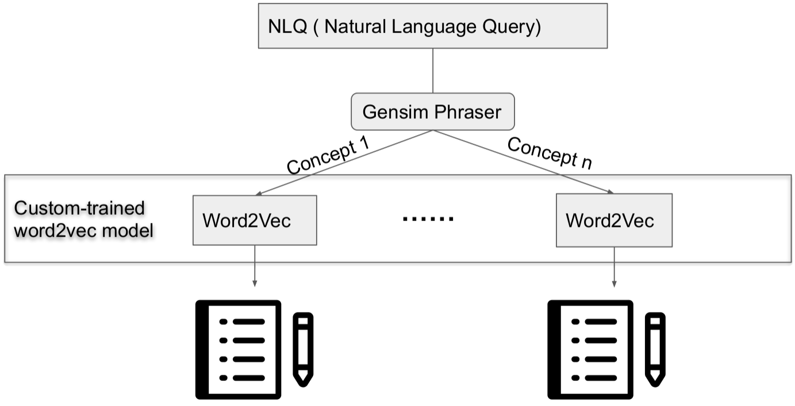
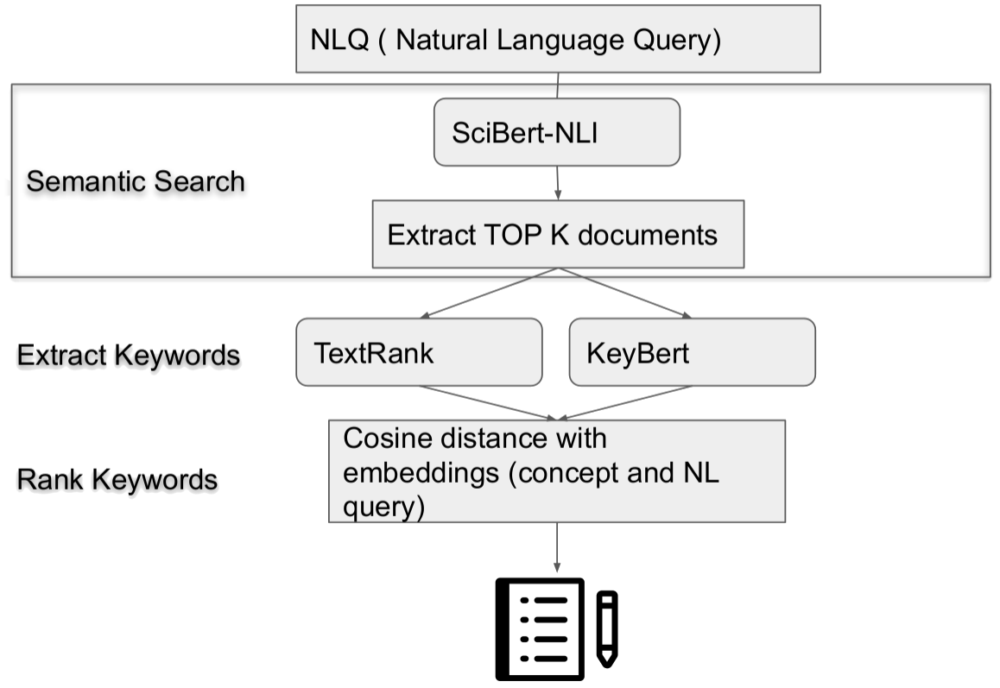

Overview
This project focused on improving Wheesbee, an advanced retrieval engine that helps extract
relevant information and insights for decision-making processes in R&D. We developed a
proof-of-concept solution that transforms natural language queries into powerful Solr queries,
making advanced search capabilities accessible to novice users.
Technical Approach
The system uses semantic search and natural language processing to:
- Generate keywords from individual concepts in the user query
- Provide contextual suggestions based on the search corpus
- Help users construct complex Solr queries without needing to learn Solr syntax
System Architecture
We built two primary APIs using Python Flask to power the query construction process:
Concept-Based Synonyms API
This API analyzes the natural language query, breaks it down into core concepts, and generates relevant
synonym suggestions for each concept:
- Endpoint:
/api/synonyms
- Processes natural language input using Word2Vec and Gensim Phraser
- Returns concept-specific suggestions with relevance scores

Architecture of the Synonyms API workflow
Contextual Suggestions API
This API provides broader contextual suggestions based on the entire search corpus:
- Endpoint:
/api/contextual
- Uses SciBert-NLI and KeyBert for semantic search
- Employs TextRank algorithm for keyword extraction
- Ranks keywords based on semantic relevance using cosine distance

Architecture of the Contextual Suggestions API workflow
User Interface
The front-end application provides an intuitive interface for query construction:
- Input field for natural language queries
- Concept-based suggestion lists that users can select from
- Contextual suggestions displayed as a word cloud with heat-map coloring
- Real-time generation of the equivalent Solr query
- Support for manual modification of the generated query
Training Process
The system's semantic capabilities were built on custom-trained models:
- Word2Vec model: Trained on 400,000 papers from the corpus
- Embeddings: Generated for all documents in the corpus to enable semantic search
- Phrase detection: Used to identify multi-word concepts and technical terminology
Key Deliverables
The project produced the following deliverables:
- Deployed APIs for contextual suggestions and concept-based synonyms
- React-based front-end application deployed as Docker containers
- Pre-trained model weights and embeddings for 400,000 papers
- Comprehensive documentation and code repository
- Framework for expanding the training data to include more of the Solr corpus
Impact
This project significantly improved the accessibility of Wheesbee's powerful search capabilities:
- Reduced the learning curve for new users by eliminating the need to learn Solr syntax
- Improved search relevance through semantic understanding of user queries
- Enhanced R&D decision-making processes by making information more discoverable
- Provided a foundation for future AI-assisted search capabilities